ユーザーデータベース
クリックすると、右のような
ウィンドウが表示されます。
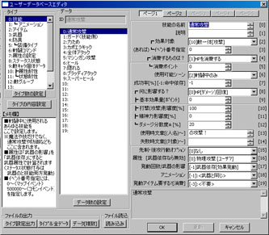
【目標】
サンプルゲームのボス「コクリュウ」が３体出現する敵グループを新たに作成し、
その敵グループを出現させるイベントを作って、テストプレイします。
| 【1】 ユーザーデータベース クリックすると、右のような ウィンドウが表示されます。 |
 |
| 【2】 タイプ「12：敵グループ」を選択します。 |
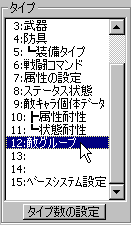 |
| 【3】 「データ」が空いているところを クリックして下さい。 （ここでは9番を選択します） |
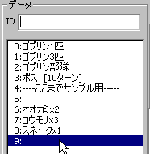 |
| 【4】 データのIDに「コクリュウx3」 と入力します。 処理上は入れなくても問題ありませんが、 分かりやすくするために入れましょう。 |
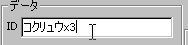 |
| 【5】 その右にある欄に、以下のように入力します。 敵1（中央） に [2]コクリュウ を入力 敵4（左に2つ） に [2]コクリュウ を入力 敵5（右に2つ） に [2]コクリュウ を入力 設定自体はこれで完了です。 次は、この敵グループを登場させる処理を 作ります。 |
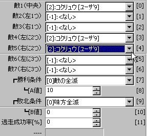 |
※ここから先は、敵グループを登場させるイベントを作成します。
| 【A1】 ここから、敵を登場させる処理を作ります。 ・まずマップ選択 切り替えて下さい。 ・適当な場所にイベントを作成して ニワトリの画像を設定しておきます。 （ここでは右の画像の位置に設置） → 分からないときは、 ◆新しいイベントを作ってみたいの 【1】～【5】までの手順をまねてください。 |
 |
| 【A2】 イベントウィンドウの右下にある 「■コマンドウィンドウ表示■」を クリックしてください。 |
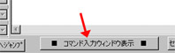 |
| 【A3】 「イベントコマンドの挿入」ウィンドウが 出てくるので、上部タブにある 「その他2」を選択して下さい。 |
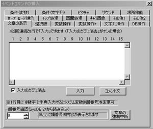 |
| 【4】 「イベントの挿入」を選び、 コモン24「◆バトルの発生」を 選択します。 |
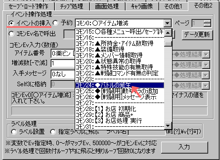 |
| 【5】 次に、「コモンEv入力（数値）」の欄を、 以下のように設定します。 ・出現させたい敵グループ [9:コクリュウx3] ・逃走可能に「0:逃走可能」 ・敗北時処理処理 「0:ゲームオーバーEv」 ・BGMに「3:戦闘BGM」 設定したら「入力」をクリックしてください。 |
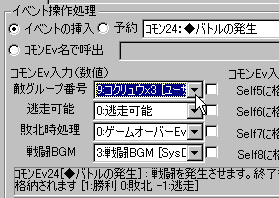 |
| 【7】 さて、マップをセーブして、 作ったイベントをテストしてみましょう。 「セーブ（マップ全体）」をクリックした後、 「テストプレイ」をクリックしてください。 |
 |
| 【8】 テストプレイを開始し、 ニワトリに向かって決定キーを押すと、 無事、コクリュウ3体と戦闘になりました！ ※このイベントに話しかけるたびに、 何度でもこの戦闘が発生します。 |
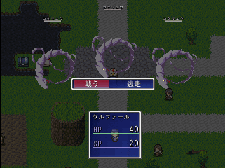 |
| 【余談】 敵の並び順について 敵は、1グループに1～7番まで同時に 出現させることができます。敵の番号と 並び順は、以下のような対応になっています。 敵6 敵4 敵2 敵1（中央） 敵3 敵5 敵7 基本的には、敵1、2、3…の順に敵を入力すれば 問題ありませんが、サイズが大きめの敵は 敵1、4、5の順に格納するとよいでしょう。 |
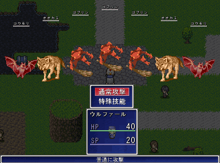 ※敵を7体登場させた例 |
＜執筆者：SmokingWOLF＞